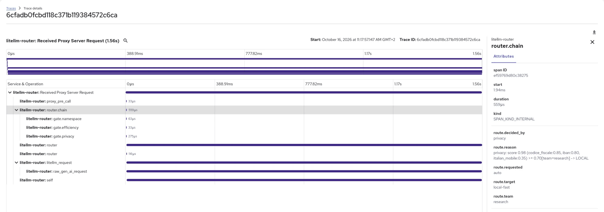
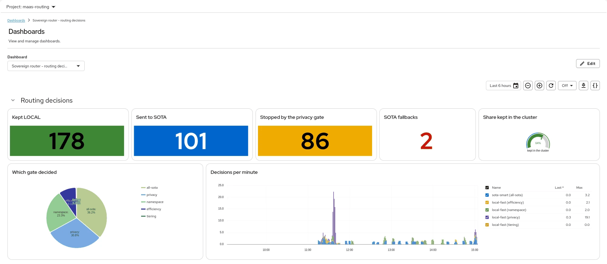
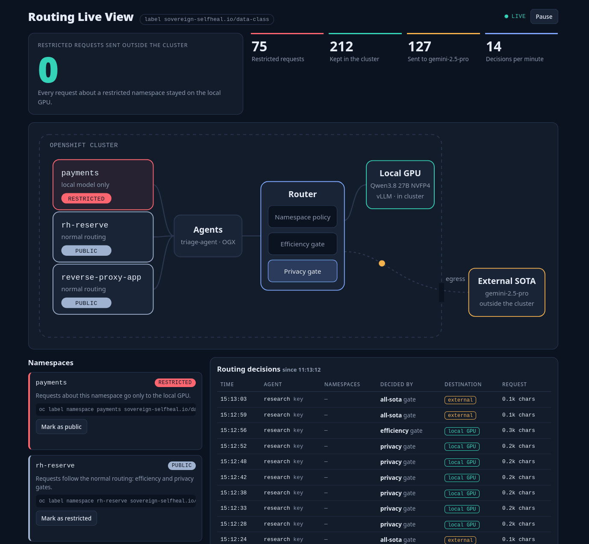

Linux Day Milano 2026 · 24 October
Automatic LLM routing on Kubernetes
Local or cloud? The gateway decides.
Amedeo Salvati
Red Hat
Opening
About me
Amedeo Salvati
Principal Consultant, Red Hat Professional Services
- Degree in Statistics
- Always passionate about open source and 3D printing
- Member of VIMELUG, vimelug.org
- Interests: statistics, AI, quantitative finance, personal finance and history
- linkedin.com/in/amedeos
- GitHub
- github.com/amedeos
- Blog
- amedeos.github.io
- u/amedeos
The demo behind this talk
Sovereign Self-Healing
LLM routing and AI SRE triage on Red Hat OpenShift AI (upstream: Open Data Hub)
15 public repositories; the routing code is under the Apache License 2.0
The question
When an app calls an LLM, where does the data go?
Prompts carry logs, metrics, tickets, and sometimes customer data.
The problem
What an AI agent sends to the model
One real investigation of our AI SRE agent, after an alert:
5
LLM turns
13
tool calls: metrics, pod lists, logs
44 s
from the alert to the incident
Every turn sends the whole conversation again: system prompt, tool definitions and all tool output.
The problem
Local model or cloud model
| Aspect | Local GPU model | External SOTA model |
|---|---|---|
| In the demo | Qwen3.8 27B (NVFP4) on vLLM | Gemini 2.5 Pro |
| Runs on | a GPU node in the cluster | the provider’s cloud |
| Your data | stays in the cluster | leaves the cluster |
| Cost | fixed: the GPU you run | per token |
| Best for | short and routine work | long and complex reasoning |
| Availability | in your hands | the provider’s: quotas and errors |
Always local limits what the agents can do. Always cloud sends everything out.
The idea of this talk
The gateway decides, request by request.
Every client calls one endpoint and asks for the model “auto”.
The API key tells the router which team is calling.
Four gates choose: the local GPU or the external model.
The architecture
The path of a request
Red Hat OpenShift cluster (upstream: OKD, Kubernetes)
AI SRE agent
one per namespace
or any LLM client
Gateway
API key → team, token limits
Connectivity Link (Kuadrant) on Envoy
Router
LiteLLM + our policy hook
4 gates decide
SOTA model
Gemini 2.5 Pro
external provider
only clean work
What the client sends
POST /v1/chat/completions
Authorization: <agent API key>
{"model": "auto", "messages": [...]}
Local model
Qwen3.8 27B NVFP4 on vLLM
Red Hat OpenShift AI (Open Data Hub, KServe)
NVIDIA GPU in the cluster
SOTA
LOCAL
The architecture
Open source on the request path
| Role | Red Hat product | Upstream project |
|---|---|---|
| Platform | Red Hat OpenShift | Kubernetes, OKD |
| Gateway | OpenShift Gateway API implementation | Gateway API, Istio, Envoy |
| API keys, token limits | Red Hat Connectivity Link | Kuadrant: Authorino, Limitador |
| Router | community project | LiteLLM + our policy hook |
| Local model serving | Red Hat OpenShift AI | Open Data Hub, KServe, vLLM |
| Decision model | Red Hat AI Inference Server (preview) | vLLM |
| SOTA token budget | community project | Redis |
| PII detection (optional) | community project | Presidio |
LiteLLM and Presidio are community software, not supported by Red Hat. Routing between a local and an external model is Technology Preview in Red Hat OpenShift AI 3.5. The decision model runs on an unsupported preview image.
The architecture
Open source around the request path
| Role | Red Hat product | Upstream project |
|---|---|---|
| Install, day 0 and day 1 | upstream used directly | Ansible |
| GitOps | Red Hat OpenShift GitOps | Argo CD |
| Metrics and alerts | OpenShift monitoring stack | Prometheus, Alertmanager, Thanos |
| Traces | Red Hat build of OpenTelemetry | OpenTelemetry |
| Trace storage | Red Hat OpenShift distributed tracing platform | Grafana Tempo |
| Dashboards | Cluster Observability Operator | Perses |
| Scale to zero | Custom Metrics Autoscaler | KEDA |
| Secrets | External Secrets Operator for Red Hat OpenShift | External Secrets Operator |
How the router decides
Four gates, in order
Gate 1
Namespace
Restricted namespace?
Gate 2
Efficiency
Needs the external model?
Gate 3
Privacy
Sensitive data inside?
Gate 4
Tiering
Team may use SOTA?
Then
SOTA
if all four gates pass
LOCAL: Qwen3.8 27B on the cluster GPU
The first gate that says LOCAL decides. The gates after it do not run.
Any error in a gate also sends the request to LOCAL: the router fails closed.
How the router decides
Gate 1: namespace
- 1 Namespace
- 2 Efficiency
- 3 Privacy
- 4 Tiering
The platform team labels the namespace of a sensitive application:
$ oc label namespace payments \
sovereign-selfheal.io/data-class=restricted
- Every request about that namespace stays LOCAL.
- No other gate runs: no detector, no budget read.
- The router finds the name in the request text: PromQL matchers, “-n payments”, payments.svc, JSON keys.
3.9 ms
to scan a real agent request of 39,283 characters
Reason in the router log:
namespace: restricted payments (found by scan) -> LOCAL
How the router decides
Gate 2: efficiency
- 1 Namespace
- 2 Efficiency
- 3 Privacy
- 4 Tiering
Three cases stay LOCAL. Every other request goes on to the next gate.
→ LOCAL
Short and simple
Up to 280 characters and 40 words, with no keyword like “analyze” or “compare”.
short/simple (30 chars, 6 words)
→ LOCAL
Too large
The whole request is over 150,000 characters. No detector runs on it.
SOTA context limit (157466 > 150000 chars)
→ LOCAL
Budget used
The agent used its 30,000 SOTA tokens in 5 minutes. It goes on with the local model, with no HTTP 429.
SOTA budget of tier agents used (31261/30000 tokens in 5m)
How the router decides
Gate 3: privacy
- 1 Namespace
- 2 Efficiency
- 3 Privacy
- 4 Tiering
Rules
Regular expressions with validators: payment cards with the Luhn check, IBAN, Italian tax codes.
Lexicons
Lists of words for health, credentials and other sensitive topics.
Decision model
Yes/no questions about the text, in one forward pass on a second GPU: a person? health? money? legal?
Score ≥ team threshold → LOCAL. A detector fails → LOCAL.
Rules find identifiers
“Analizza questo profilo: Mario Rossi, codice fiscale RSSMRA80A01H501U, IBAN IT60X0542811101000000123456 …”
score 0.98 ≥ 0.70 → LOCAL, in 0.3 ms
The decision model finds a person
“Analyze the career options of Mario Rossi, an Italian engineer who lives in Milan.”
person: yes (1.00) → score 0.80 ≥ 0.70 → LOCAL
How the router decides
Gate 4: tiering
- 1 Namespace
- 2 Efficiency
- 3 Privacy
- 4 Tiering
| Team (from the API key) | Models | Gateway token limit | SOTA budget |
|---|---|---|---|
| legal | local only | 20,000 / 5 min | none |
| research | local + SOTA | 100,000 / 1 min | none |
| one per agent, e.g. agents-payments | local + SOTA | 200,000 / 5 min | 30,000 / 5 min |
| agents-critical | local + SOTA | 600,000 / 5 min | 150,000 / 5 min |
How it works
The gateway sets the team from the API key, in the header x-team. A client cannot change it.
Tiering runs last, and it can only move a request to LOCAL.
Example: team legal
“Compare in detail, step by step, the main approaches to database sharding and their trade-offs.”
tiering: team 'legal' not allowed 'sota-smart' -> LOCAL
How the router decides
Eight requests, eight decisions
| Request | Team | Decided by | Result |
|---|---|---|---|
| An agent turn about payments (39,283 characters) | agents-payments | namespace | LOCAL |
| “What is the capital of France?” | research | efficiency: short | LOCAL |
| An agent-shaped test request (157,466 characters) | research | efficiency: size | LOCAL |
| A complex question after the team’s budget is used | validation | efficiency: budget | LOCAL |
| A profile with a tax code, an IBAN and a phone number | research | privacy: rules | LOCAL |
| “Analyze the career options of Mario Rossi …” | research | privacy: decision model | LOCAL |
| “Compare … the main approaches to database sharding …” | legal | tiering | LOCAL |
| “Analyze the trade-offs between event sourcing and CRUD …” | research | all four gates pass | SOTA |
Seeing it work
Tracing every decision

3.9 ms · namespace scan
156 ms · privacy with the decision model
1.8 s · the SOTA answer
Seeing it work
Dashboards and a live page


Seeing it work
Demo: two alerts, two namespaces
RESTRICTED
payments
Every LLM turn of its agent stays on the local GPU.
Decided by: the namespace gate
PUBLIC
rh-reserve
Clean, complex turns go to the external model.
Decided by: all four gates pass
What to watch
1 · the dashboard, agent by agent
2 · the alert and the agent at work
3 · the incident that the agent opens
Demo
The demo on the cluster, recorded
The recording plays on the audience screen. P plays or pauses, ↓ ↑ jump 10 seconds.
Recording of the demo cluster, 21 October 2026: shown at the talk only
Demo
The router simulator, live
The simulator runs on the audience screen. ↓ ↑ change the example, P pauses or plays.
Live on sovereign-selfheal.github.io: “Watch the router decide”
Demo
The investigation replay, live
The replay runs on the audience screen. ↓ ↑ change the investigation, P plays it again.
Live on sovereign-selfheal.github.io: “From the alert to the incident”
Lessons learned
False positives on technical text
Agent requests are full of logs, metrics and technical words.
0.024836864197530867
A value from Prometheus. Its digits pass the Luhn check, so a rule saw a payment card.
Fix: the card rule ignores decimal numbers.
Kafka, Paxos
Presidio NER read single technical words as names of people.
Fix: a person needs at least two words.
Diagnosis Summary
A heading in the agent’s own prompt matched the health lexicon.
Fix: the word left the lexicon.
With the decision model on, we turned Presidio NER off: false positives on agent contexts went from 18 to 0, with no new leaks in our evaluation.
Lessons learned
A bug in the gateway
The agent runtime asked for the model list twice. The second call never came back.
$ curl --http1.1 -H "$AUTH" \
$URL/v1/models $URL/v1/models
first request: HTTP 200
second request: no answer, timeout
- The token limit reads usage.total_tokens in every answer.
- A GET of the model list has no usage. The Wasm filter fails, and the answer never ends.
- The next request on the same keep-alive connection waits forever.
Fix: count tokens only for POST requests
when: request.method == 'POST'
Lesson: test like production
Our test suite opened a new connection for every call, so it never saw the bug.
Wrapping up
Try it on your cluster
$ git clone https://github.com/sovereign-selfheal/ansible.git $ cd ansible $ uv sync $ uv run ansible-galaxy collection install -r requirements.yml $ scripts/run-playbook.sh playbooks/site.yml
Tested on Red Hat OpenShift 4.22 on AWS, with two GPU nodes. A CPU-only profile exists, and without a key for an external model everything runs locally.
1 playbook
operators, GPU nodes, gateway and the Argo CD seed
40–60 min
for a full install; Argo CD deploys the rest from git
80+ checks
in the validation playbook, on the live cluster
Wrapping up
Three things to take home
1
Decide in the platform
One endpoint and one policy for every client. Agents do not choose a model.
2
Fail closed, and trace it
When in doubt, the data stays local. Every decision is a log line and a trace.
3
Build on open source
Kubernetes, Gateway API, Kuadrant, vLLM and LiteLLM: code that you can read and change.
Linux Day Milano 2026
Thank you. Questions?
the site: router simulator, replays, install guide
all the code
Amedeo Salvati
linkedin.com/in/amedeos · github.com/amedeos · amedeos.github.io · reddit u/amedeos
A community demo, not a Red Hat product. LiteLLM and Presidio are community software, not supported by Red Hat. Routing between a local and an external model is Technology Preview in Red Hat OpenShift AI 3.5. The decision model runs on an unsupported preview image.
Backup
Two investigations, side by side
| Aspect | payments · restricted | rh-reserve · public |
|---|---|---|
| LLM turns | 5, all LOCAL (namespace gate) | 5, all SOTA (all gates pass) |
| Model | Qwen3.8 27B on the local GPU | Gemini 2.5 Pro, external |
| Input tokens per turn | 8,028 → 22,876 | 5,982 → 8,551 |
| Tool calls | 13 (4 failed, then retried) | 4 |
| Incident opened | after 44 s | after 26 s |
| Report written | after 51 s | after 39 s |
| Time in LLM calls | 50 s | 38 s |
We saw failed tool calls only in local runs. We think that the local model writes its first tool calls less precisely, but we have not proven it.
Backup
Large agent contexts
150,000
characters: the size cap
Above it, the request stays local and no detector runs. The detectors set this limit, not the external model.
10 s, 15 s
timeouts that grow
Presidio gets 0.052 s and the decision model 0.11 s per 1,000 characters, up to 10 s and 15 s. A timeout still fails closed.
2–3 s
with the prefix cache
Agent turns of 67,000 to 120,000 tokens on the local model: 2.2–3.2 s instead of 9.6–23.3 s.
Backup
When something fails
| Failure | What happens |
|---|---|
| A detector fails or times out | LOCAL |
| An unexpected error in the hook | LOCAL, decided by “fail-closed” |
| The decision model fails | The local chat model answers the same questions; if it fails too, LOCAL |
| The external model fails | LiteLLM falls back to the local model; its tokens do not count in the budget |
| Redis is down | The SOTA budget is off (fail-open): it controls cost, not privacy |
| Namespace labels not read yet | Normal routing, with a metric and a log flag; the privacy gate still runs |
Backup
The decision model
What. DiffusionGemma 26B-A4B (FP8) on vLLM, in structured-read mode, on its own NVIDIA L40S GPU.
How. The router sends the request text and a set of yes/no questions. One forward pass gives a probability for each question.
Speed. About 130 to 160 ms per call in the cluster; about 5.8 s for 40,000 tokens of new text.
Fallback. If it fails, the local Qwen model answers the same questions as a chat model.
Status. Unsupported preview image. Planned as Developer Preview in Red Hat AI Inference Server 3.6 (upstream: vLLM).
The questions
health
job
legal
family
money
secret
private
person
A “yes” at 0.5 or more adds 0.80 to the privacy score. A ninth question, biz, only shows in the log.
Backup
A gateway pod without its Wasm module
Symptom
Right after the install, every request from one client got HTTP 503. Envoy log: wasm_fail_stream.
Cause
One gateway pod failed to download the Kuadrant Wasm module at start. Envoy keeps it broken, with no retry.
Why only one client
The route is passthrough with source balancing, so one client IP always reaches the same pod.
Fix
The install reads the Envoy stats of every gateway pod and replaces a broken one. A validation check tests it.
Backup
One log line per decision
[policy-router] {'requested': 'auto', 'routed_to': 'local-fast',
'decided_by': 'privacy', 'team': 'research',
'reason': 'privacy: score 0.98 (codice_fiscale:0.85, iban:0.80,
italian_mobile:0.35) >= 0.70[team=research] -> LOCAL',
'trace_id': '6cfadb0fcbd118c371b119384572c6ca', ...}
| Metric | Labels | Meaning |
|---|---|---|
| router_requests_total | routed_to, decided_by, team | one per decision |
| router_privacy_score | team | score at the privacy gate |
| router_sota_tokens_total | team | tokens of SOTA answers |
| router_namespace_decisions_total | target_namespace, routed_to, source | restricted-namespace decisions |